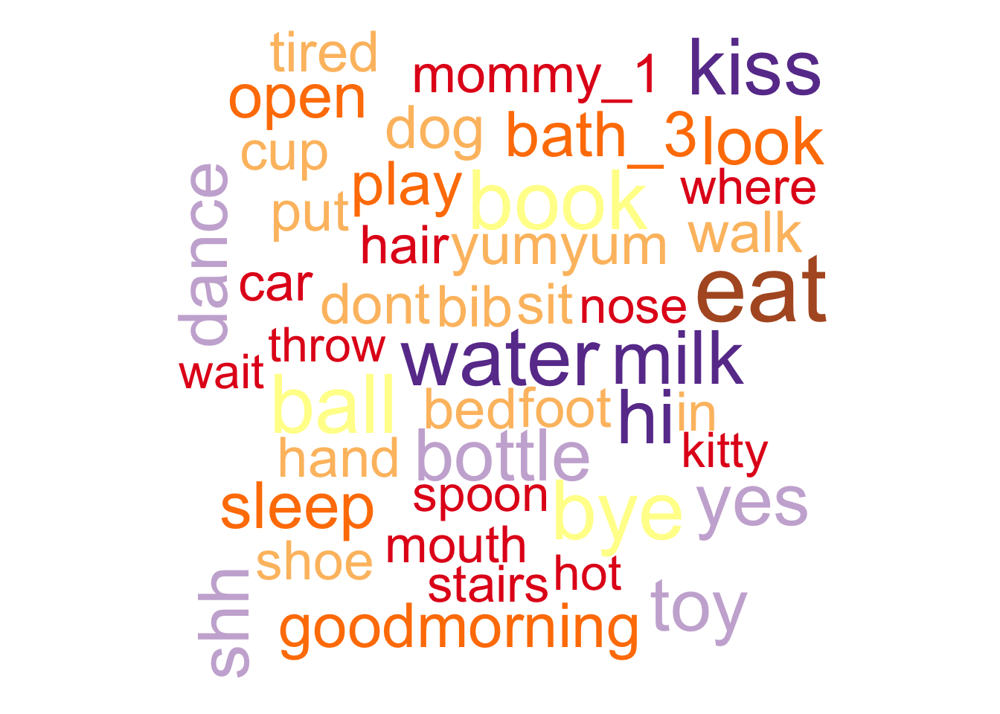
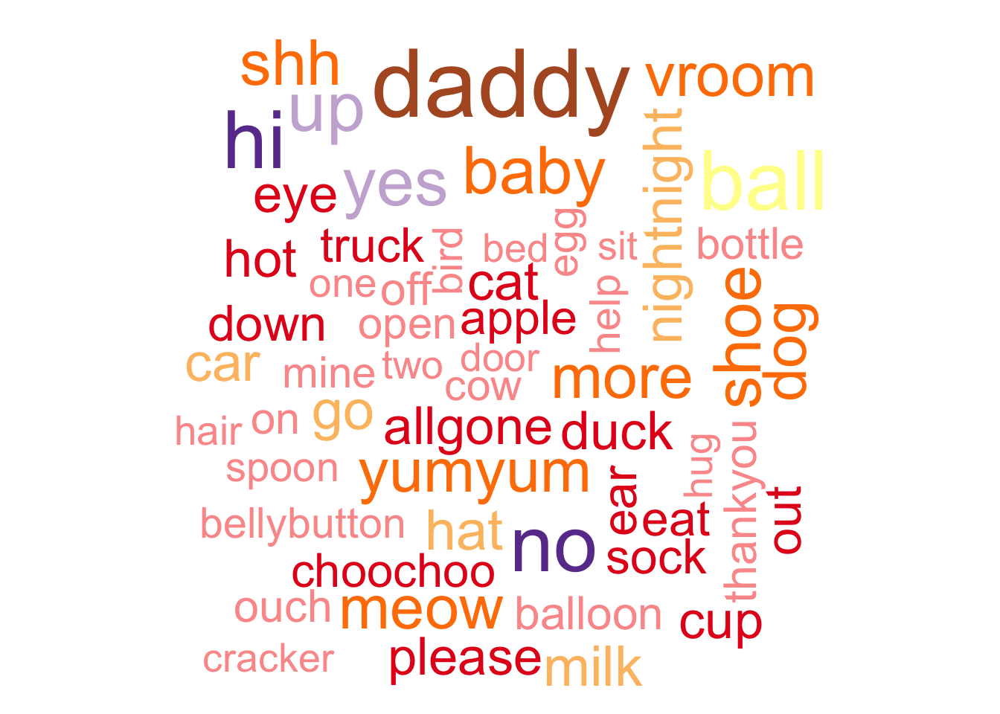
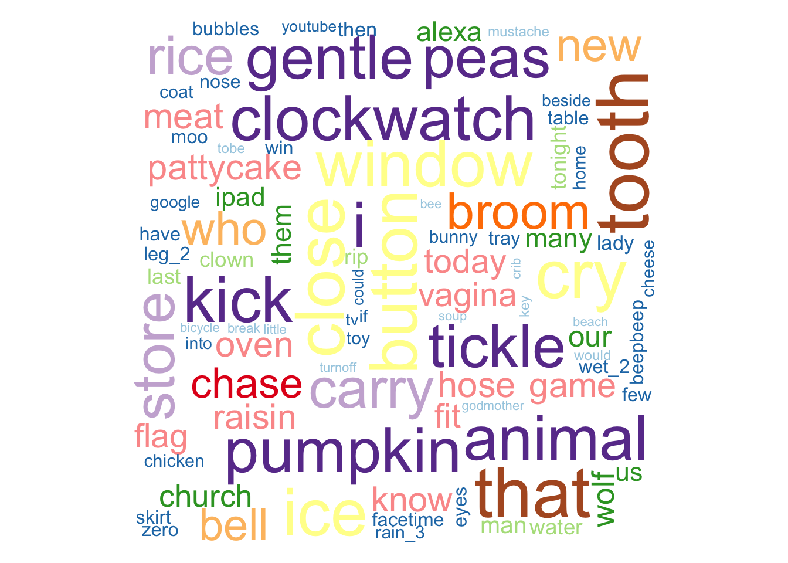
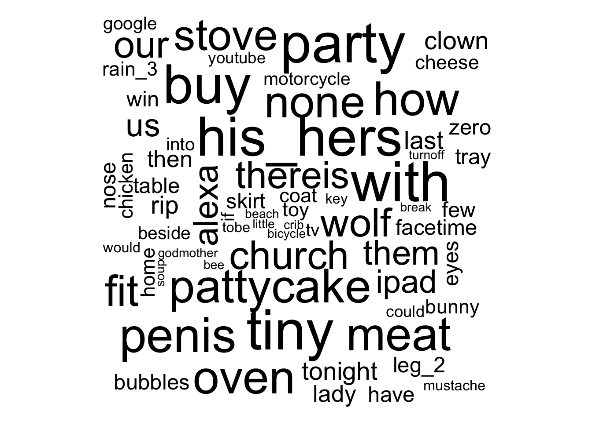

Language visualizations
Language exposure
df <- home_visit_df |>
dplyr::mutate(language_child = stringr::str_replace_all(language_child, " ", "_"))
xtabs(formula = ~ child_sex + language_child, data = df)## language_child
## child_sex english english_spanish
## female 177 32
## male 154 52MB-CDI
12-mo-old English speakers
eng_12 <-
readr::read_csv(
"../data/csv/home_visit/agg/mcdi_english_12_combined.csv",
col_types = readr::cols(.default = 'c'),
show_col_types = FALSE
)There are \(n=\) 137 participant records.
eng_12_long <- eng_12 |>
tidyr::pivot_longer(cols = !(play_id | site_id | subject_number),
names_to = "word",
values_to = "understands_or_says")
#xtabs(~ word + understands_or_says, eng_12_long)word_ct <- eng_12_long |>
dplyr::filter(!is.na(understands_or_says)) |>
dplyr::filter(understands_or_says == "understands") |>
dplyr::count(word, sort = TRUE)
quant_25 <- round(n_12_eng*.25, 0)rcb_color_paired <- RColorBrewer::brewer.pal(12, 'Paired')
wordcloud::wordcloud(words = word_ct$word, freq = word_ct$n, min.freq = quant_25, colors = rcb_color_paired)## Warning in wordcloud::wordcloud(words = word_ct$word, freq = word_ct$n, :
## thankyou could not be fit on page. It will not be plotted.## Warning in wordcloud::wordcloud(words = word_ct$word, freq = word_ct$n, :
## allgone could not be fit on page. It will not be plotted.## Warning in wordcloud::wordcloud(words = word_ct$word, freq = word_ct$n, :
## bath_1 could not be fit on page. It will not be plotted.## Warning in wordcloud::wordcloud(words = word_ct$word, freq = word_ct$n, :
## diaper could not be fit on page. It will not be plotted.## Warning in wordcloud::wordcloud(words = word_ct$word, freq = word_ct$n, :
## grandpa could not be fit on page. It will not be plotted.## Warning in wordcloud::wordcloud(words = word_ct$word, freq = word_ct$n, : more
## could not be fit on page. It will not be plotted.## Warning in wordcloud::wordcloud(words = word_ct$word, freq = word_ct$n, :
## outside_1 could not be fit on page. It will not be plotted.## Warning in wordcloud::wordcloud(words = word_ct$word, freq = word_ct$n, :
## grandma could not be fit on page. It will not be plotted.## Warning in wordcloud::wordcloud(words = word_ct$word, freq = word_ct$n, :
## nightnight could not be fit on page. It will not be plotted.## Warning in wordcloud::wordcloud(words = word_ct$word, freq = word_ct$n, : baby
## could not be fit on page. It will not be plotted.## Warning in wordcloud::wordcloud(words = word_ct$word, freq = word_ct$n, :
## woofwoof could not be fit on page. It will not be plotted.## Warning in wordcloud::wordcloud(words = word_ct$word, freq = word_ct$n, : uh_oh
## could not be fit on page. It will not be plotted.
18-mo-old English speakers
eng_18 <-
readr::read_csv(
"../data/csv/home_visit/agg/mcdi_english_18_combined.csv",
col_types = readr::cols(.default = 'c'),
show_col_types = FALSE
)There are \(n=\) 123 participant records.
word_ct <- eng_18_long <- eng_18 |>
tidyr::pivot_longer(cols = !(play_id | site_id | subject_number),
names_to = "word",
values_to = "says") |>
dplyr::filter(!is.na(says)) |>
dplyr::filter(says == TRUE) |>
dplyr::count(word, sort = TRUE)
quant_25 <- round(n_18_eng*.25, 0)wordcloud::wordcloud(words = word_ct$word, freq = word_ct$n, min.freq = quant_25, colors = rcb_color_paired)## Warning in wordcloud::wordcloud(words = word_ct$word, freq = word_ct$n, : mommy
## could not be fit on page. It will not be plotted.## Warning in wordcloud::wordcloud(words = word_ct$word, freq = word_ct$n, :
## baabaa could not be fit on page. It will not be plotted.## Warning in wordcloud::wordcloud(words = word_ct$word, freq = word_ct$n, : uhoh
## could not be fit on page. It will not be plotted.## Warning in wordcloud::wordcloud(words = word_ct$word, freq = word_ct$n, :
## woofwoof could not be fit on page. It will not be plotted.## Warning in wordcloud::wordcloud(words = word_ct$word, freq = word_ct$n, :
## banana could not be fit on page. It will not be plotted.## Warning in wordcloud::wordcloud(words = word_ct$word, freq = word_ct$n, : book
## could not be fit on page. It will not be plotted.## Warning in wordcloud::wordcloud(words = word_ct$word, freq = word_ct$n, : bye
## could not be fit on page. It will not be plotted.## Warning in wordcloud::wordcloud(words = word_ct$word, freq = word_ct$n, :
## quackquack could not be fit on page. It will not be plotted.
24-mo-old English speakers
eng_24 <-
readr::read_csv(
"../data/csv/home_visit/agg/mcdi_english_24_combined.csv",
col_types = readr::cols(.default = 'c'),
show_col_types = FALSE
)There are \(n=\) 109 participant records.
word_ct <- eng_24_long <- eng_24 |>
tidyr::pivot_longer(cols = !(play_id | site_id | subject_number),
names_to = "word",
values_to = "says") |>
dplyr::filter(!is.na(says)) |>
dplyr::filter(says == TRUE) |>
dplyr::count(word, sort = TRUE)
n_24_eng <- dim(eng_24)[1]common_word_ct <- word_ct |>
dplyr::filter(n < n_24_eng*.5)
wordcloud::wordcloud(words = common_word_ct$word, freq = common_word_ct$n, colors = rcb_color_paired)## Warning in wordcloud::wordcloud(words = common_word_ct$word, freq =
## common_word_ct$n, : shake could not be fit on page. It will not be plotted.## Warning in wordcloud::wordcloud(words = common_word_ct$word, freq =
## common_word_ct$n, : park could not be fit on page. It will not be plotted.## Warning in wordcloud::wordcloud(words = common_word_ct$word, freq =
## common_word_ct$n, : what could not be fit on page. It will not be plotted.## Warning in wordcloud::wordcloud(words = common_word_ct$word, freq =
## common_word_ct$n, : fall could not be fit on page. It will not be plotted.## Warning in wordcloud::wordcloud(words = common_word_ct$word, freq =
## common_word_ct$n, : coffee could not be fit on page. It will not be plotted.## Warning in wordcloud::wordcloud(words = common_word_ct$word, freq =
## common_word_ct$n, : picture could not be fit on page. It will not be plotted.## Warning in wordcloud::wordcloud(words = common_word_ct$word, freq =
## common_word_ct$n, : cloud could not be fit on page. It will not be plotted.## Warning in wordcloud::wordcloud(words = common_word_ct$word, freq =
## common_word_ct$n, : person could not be fit on page. It will not be plotted.## Warning in wordcloud::wordcloud(words = common_word_ct$word, freq =
## common_word_ct$n, : tired could not be fit on page. It will not be plotted.## Warning in wordcloud::wordcloud(words = common_word_ct$word, freq =
## common_word_ct$n, : under could not be fit on page. It will not be plotted.## Warning in wordcloud::wordcloud(words = common_word_ct$word, freq =
## common_word_ct$n, : stick could not be fit on page. It will not be plotted.## Warning in wordcloud::wordcloud(words = common_word_ct$word, freq =
## common_word_ct$n, : turnon could not be fit on page. It will not be plotted.## Warning in wordcloud::wordcloud(words = common_word_ct$word, freq =
## common_word_ct$n, : all could not be fit on page. It will not be plotted.## Warning in wordcloud::wordcloud(words = common_word_ct$word, freq =
## common_word_ct$n, : hungry could not be fit on page. It will not be plotted.## Warning in wordcloud::wordcloud(words = common_word_ct$word, freq =
## common_word_ct$n, : pretty could not be fit on page. It will not be plotted.## Warning in wordcloud::wordcloud(words = common_word_ct$word, freq =
## common_word_ct$n, : stove could not be fit on page. It will not be plotted.## Warning in wordcloud::wordcloud(words = common_word_ct$word, freq =
## common_word_ct$n, : glasses could not be fit on page. It will not be plotted.## Warning in wordcloud::wordcloud(words = common_word_ct$word, freq =
## common_word_ct$n, : street could not be fit on page. It will not be plotted.## Warning in wordcloud::wordcloud(words = common_word_ct$word, freq =
## common_word_ct$n, : boy could not be fit on page. It will not be plotted.## Warning in wordcloud::wordcloud(words = common_word_ct$word, freq =
## common_word_ct$n, : candy_1 could not be fit on page. It will not be plotted.## Warning in wordcloud::wordcloud(words = common_word_ct$word, freq =
## common_word_ct$n, : dump could not be fit on page. It will not be plotted.## Warning in wordcloud::wordcloud(words = common_word_ct$word, freq =
## common_word_ct$n, : day could not be fit on page. It will not be plotted.## Warning in wordcloud::wordcloud(words = common_word_ct$word, freq =
## common_word_ct$n, : taste could not be fit on page. It will not be plotted.## Warning in wordcloud::wordcloud(words = common_word_ct$word, freq =
## common_word_ct$n, : do could not be fit on page. It will not be plotted.## Warning in wordcloud::wordcloud(words = common_word_ct$word, freq =
## common_word_ct$n, : sing could not be fit on page. It will not be plotted.## Warning in wordcloud::wordcloud(words = common_word_ct$word, freq =
## common_word_ct$n, : medicine could not be fit on page. It will not be plotted.## Warning in wordcloud::wordcloud(words = common_word_ct$word, freq =
## common_word_ct$n, : bedroom could not be fit on page. It will not be plotted.## Warning in wordcloud::wordcloud(words = common_word_ct$word, freq =
## common_word_ct$n, : tongue could not be fit on page. It will not be plotted.## Warning in wordcloud::wordcloud(words = common_word_ct$word, freq =
## common_word_ct$n, : his_hers could not be fit on page. It will not be plotted.## Warning in wordcloud::wordcloud(words = common_word_ct$word, freq =
## common_word_ct$n, : you could not be fit on page. It will not be plotted.## Warning in wordcloud::wordcloud(words = common_word_ct$word, freq =
## common_word_ct$n, : think could not be fit on page. It will not be plotted.## Warning in wordcloud::wordcloud(words = common_word_ct$word, freq =
## common_word_ct$n, : penis could not be fit on page. It will not be plotted.## Warning in wordcloud::wordcloud(words = common_word_ct$word, freq =
## common_word_ct$n, : bad could not be fit on page. It will not be plotted.## Warning in wordcloud::wordcloud(words = common_word_ct$word, freq =
## common_word_ct$n, : how could not be fit on page. It will not be plotted.## Warning in wordcloud::wordcloud(words = common_word_ct$word, freq =
## common_word_ct$n, : TV could not be fit on page. It will not be plotted.## Warning in wordcloud::wordcloud(words = common_word_ct$word, freq =
## common_word_ct$n, : need could not be fit on page. It will not be plotted.## Warning in wordcloud::wordcloud(words = common_word_ct$word, freq =
## common_word_ct$n, : touch could not be fit on page. It will not be plotted.## Warning in wordcloud::wordcloud(words = common_word_ct$word, freq =
## common_word_ct$n, : scissors could not be fit on page. It will not be plotted.## Warning in wordcloud::wordcloud(words = common_word_ct$word, freq =
## common_word_ct$n, : cereal could not be fit on page. It will not be plotted.## Warning in wordcloud::wordcloud(words = common_word_ct$word, freq =
## common_word_ct$n, : the could not be fit on page. It will not be plotted.## Warning in wordcloud::wordcloud(words = common_word_ct$word, freq =
## common_word_ct$n, : shopping could not be fit on page. It will not be plotted.## Warning in wordcloud::wordcloud(words = common_word_ct$word, freq =
## common_word_ct$n, : party could not be fit on page. It will not be plotted.## Warning in wordcloud::wordcloud(words = common_word_ct$word, freq =
## common_word_ct$n, : brother could not be fit on page. It will not be plotted.## Warning in wordcloud::wordcloud(words = common_word_ct$word, freq =
## common_word_ct$n, : drum could not be fit on page. It will not be plotted.## Warning in wordcloud::wordcloud(words = common_word_ct$word, freq =
## common_word_ct$n, : thereis could not be fit on page. It will not be plotted.## Warning in wordcloud::wordcloud(words = common_word_ct$word, freq =
## common_word_ct$n, : much could not be fit on page. It will not be plotted.## Warning in wordcloud::wordcloud(words = common_word_ct$word, freq =
## common_word_ct$n, : bicylcle could not be fit on page. It will not be plotted.## Warning in wordcloud::wordcloud(words = common_word_ct$word, freq =
## common_word_ct$n, : penguin could not be fit on page. It will not be plotted.## Warning in wordcloud::wordcloud(words = common_word_ct$word, freq =
## common_word_ct$n, : pot could not be fit on page. It will not be plotted.## Warning in wordcloud::wordcloud(words = common_word_ct$word, freq =
## common_word_ct$n, : sweater could not be fit on page. It will not be plotted.## Warning in wordcloud::wordcloud(words = common_word_ct$word, freq =
## common_word_ct$n, : finish could not be fit on page. It will not be plotted.## Warning in wordcloud::wordcloud(words = common_word_ct$word, freq =
## common_word_ct$n, : chin could not be fit on page. It will not be plotted.## Warning in wordcloud::wordcloud(words = common_word_ct$word, freq =
## common_word_ct$n, : cockadoodledoo could not be fit on page. It will not be
## plotted.## Warning in wordcloud::wordcloud(words = common_word_ct$word, freq =
## common_word_ct$n, : bib could not be fit on page. It will not be plotted.## Warning in wordcloud::wordcloud(words = common_word_ct$word, freq =
## common_word_ct$n, : ant could not be fit on page. It will not be plotted.## Warning in wordcloud::wordcloud(words = common_word_ct$word, freq =
## common_word_ct$n, : closet could not be fit on page. It will not be plotted.## Warning in wordcloud::wordcloud(words = common_word_ct$word, freq =
## common_word_ct$n, : sister could not be fit on page. It will not be plotted.## Warning in wordcloud::wordcloud(words = common_word_ct$word, freq =
## common_word_ct$n, : spaghetti could not be fit on page. It will not be plotted.## Warning in wordcloud::wordcloud(words = common_word_ct$word, freq =
## common_word_ct$n, : tiger could not be fit on page. It will not be plotted.## Warning in wordcloud::wordcloud(words = common_word_ct$word, freq =
## common_word_ct$n, : inthemorning could not be fit on page. It will not be
## plotted.## Warning in wordcloud::wordcloud(words = common_word_ct$word, freq =
## common_word_ct$n, : plant could not be fit on page. It will not be plotted.## Warning in wordcloud::wordcloud(words = common_word_ct$word, freq =
## common_word_ct$n, : corn could not be fit on page. It will not be plotted.## Warning in wordcloud::wordcloud(words = common_word_ct$word, freq =
## common_word_ct$n, : teddybear could not be fit on page. It will not be plotted.## Warning in wordcloud::wordcloud(words = common_word_ct$word, freq =
## common_word_ct$n, : after could not be fit on page. It will not be plotted.## Warning in wordcloud::wordcloud(words = common_word_ct$word, freq =
## common_word_ct$n, : grass could not be fit on page. It will not be plotted.## Warning in wordcloud::wordcloud(words = common_word_ct$word, freq =
## common_word_ct$n, : couch could not be fit on page. It will not be plotted.## Warning in wordcloud::wordcloud(words = common_word_ct$word, freq =
## common_word_ct$n, : hit could not be fit on page. It will not be plotted.## Warning in wordcloud::wordcloud(words = common_word_ct$word, freq =
## common_word_ct$n, : circle could not be fit on page. It will not be plotted.## Warning in wordcloud::wordcloud(words = common_word_ct$word, freq =
## common_word_ct$n, : tiny could not be fit on page. It will not be plotted.## Warning in wordcloud::wordcloud(words = common_word_ct$word, freq =
## common_word_ct$n, : popcorn could not be fit on page. It will not be plotted.## Warning in wordcloud::wordcloud(words = common_word_ct$word, freq =
## common_word_ct$n, : potato could not be fit on page. It will not be plotted.## Warning in wordcloud::wordcloud(words = common_word_ct$word, freq =
## common_word_ct$n, : shower could not be fit on page. It will not be plotted.## Warning in wordcloud::wordcloud(words = common_word_ct$word, freq =
## common_word_ct$n, : doll could not be fit on page. It will not be plotted.## Warning in wordcloud::wordcloud(words = common_word_ct$word, freq =
## common_word_ct$n, : mop could not be fit on page. It will not be plotted.## Warning in wordcloud::wordcloud(words = common_word_ct$word, freq =
## common_word_ct$n, : snake could not be fit on page. It will not be plotted.## Warning in wordcloud::wordcloud(words = common_word_ct$word, freq =
## common_word_ct$n, : friend could not be fit on page. It will not be plotted.## Warning in wordcloud::wordcloud(words = common_word_ct$word, freq =
## common_word_ct$n, : buy could not be fit on page. It will not be plotted.## Warning in wordcloud::wordcloud(words = common_word_ct$word, freq =
## common_word_ct$n, : to could not be fit on page. It will not be plotted.## Warning in wordcloud::wordcloud(words = common_word_ct$word, freq =
## common_word_ct$n, : beans could not be fit on page. It will not be plotted.## Warning in wordcloud::wordcloud(words = common_word_ct$word, freq =
## common_word_ct$n, : squirrel could not be fit on page. It will not be plotted.## Warning in wordcloud::wordcloud(words = common_word_ct$word, freq =
## common_word_ct$n, : listen could not be fit on page. It will not be plotted.## Warning in wordcloud::wordcloud(words = common_word_ct$word, freq =
## common_word_ct$n, : where could not be fit on page. It will not be plotted.## Warning in wordcloud::wordcloud(words = common_word_ct$word, freq =
## common_word_ct$n, : necklace could not be fit on page. It will not be plotted.## Warning in wordcloud::wordcloud(words = common_word_ct$word, freq =
## common_word_ct$n, : applesauce could not be fit on page. It will not be
## plotted.## Warning in wordcloud::wordcloud(words = common_word_ct$word, freq =
## common_word_ct$n, : firetruck could not be fit on page. It will not be plotted.## Warning in wordcloud::wordcloud(words = common_word_ct$word, freq =
## common_word_ct$n, : bathroom could not be fit on page. It will not be plotted.## Warning in wordcloud::wordcloud(words = common_word_ct$word, freq =
## common_word_ct$n, : frenchfries could not be fit on page. It will not be
## plotted.## Warning in wordcloud::wordcloud(words = common_word_ct$word, freq =
## common_word_ct$n, : pillow could not be fit on page. It will not be plotted.## Warning in wordcloud::wordcloud(words = common_word_ct$word, freq =
## common_word_ct$n, : there could not be fit on page. It will not be plotted.## Warning in wordcloud::wordcloud(words = common_word_ct$word, freq =
## common_word_ct$n, : broken could not be fit on page. It will not be plotted.## Warning in wordcloud::wordcloud(words = common_word_ct$word, freq =
## common_word_ct$n, : bench could not be fit on page. It will not be plotted.## Warning in wordcloud::wordcloud(words = common_word_ct$word, freq =
## common_word_ct$n, : face could not be fit on page. It will not be plotted.## Warning in wordcloud::wordcloud(words = common_word_ct$word, freq =
## common_word_ct$n, : with could not be fit on page. It will not be plotted.## Warning in wordcloud::wordcloud(words = common_word_ct$word, freq =
## common_word_ct$n, : like could not be fit on page. It will not be plotted.## Warning in wordcloud::wordcloud(words = common_word_ct$word, freq =
## common_word_ct$n, : cheek could not be fit on page. It will not be plotted.## Warning in wordcloud::wordcloud(words = common_word_ct$word, freq =
## common_word_ct$n, : rectangle could not be fit on page. It will not be plotted.## Warning in wordcloud::wordcloud(words = common_word_ct$word, freq =
## common_word_ct$n, : dress could not be fit on page. It will not be plotted.## Warning in wordcloud::wordcloud(words = common_word_ct$word, freq =
## common_word_ct$n, : triangle could not be fit on page. It will not be plotted.## Warning in wordcloud::wordcloud(words = common_word_ct$word, freq =
## common_word_ct$n, : icecream could not be fit on page. It will not be plotted.## Warning in wordcloud::wordcloud(words = common_word_ct$word, freq =
## common_word_ct$n, : blow could not be fit on page. It will not be plotted.## Warning in wordcloud::wordcloud(words = common_word_ct$word, freq =
## common_word_ct$n, : hear could not be fit on page. It will not be plotted.## Warning in wordcloud::wordcloud(words = common_word_ct$word, freq =
## common_word_ct$n, : room could not be fit on page. It will not be plotted.## Warning in wordcloud::wordcloud(words = common_word_ct$word, freq =
## common_word_ct$n, : behind could not be fit on page. It will not be plotted.## Warning in wordcloud::wordcloud(words = common_word_ct$word, freq =
## common_word_ct$n, : school could not be fit on page. It will not be plotted.## Warning in wordcloud::wordcloud(words = common_word_ct$word, freq =
## common_word_ct$n, : sky could not be fit on page. It will not be plotted.## Warning in wordcloud::wordcloud(words = common_word_ct$word, freq =
## common_word_ct$n, : glass could not be fit on page. It will not be plotted.## Warning in wordcloud::wordcloud(words = common_word_ct$word, freq =
## common_word_ct$n, : girl could not be fit on page. It will not be plotted.## Warning in wordcloud::wordcloud(words = common_word_ct$word, freq =
## common_word_ct$n, : rabbit could not be fit on page. It will not be plotted.## Warning in wordcloud::wordcloud(words = common_word_ct$word, freq =
## common_word_ct$n, : money could not be fit on page. It will not be plotted.## Warning in wordcloud::wordcloud(words = common_word_ct$word, freq =
## common_word_ct$n, : six could not be fit on page. It will not be plotted.## Warning in wordcloud::wordcloud(words = common_word_ct$word, freq =
## common_word_ct$n, : cake could not be fit on page. It will not be plotted.## Warning in wordcloud::wordcloud(words = common_word_ct$word, freq =
## common_word_ct$n, : purse could not be fit on page. It will not be plotted.## Warning in wordcloud::wordcloud(words = common_word_ct$word, freq =
## common_word_ct$n, : kitchen could not be fit on page. It will not be plotted.## Warning in wordcloud::wordcloud(words = common_word_ct$word, freq =
## common_word_ct$n, : helicopter could not be fit on page. It will not be
## plotted.## Warning in wordcloud::wordcloud(words = common_word_ct$word, freq =
## common_word_ct$n, : good could not be fit on page. It will not be plotted.## Warning in wordcloud::wordcloud(words = common_word_ct$word, freq =
## common_word_ct$n, : motorcycle could not be fit on page. It will not be
## plotted.## Warning in wordcloud::wordcloud(words = common_word_ct$word, freq =
## common_word_ct$n, : none could not be fit on page. It will not be plotted.## Warning in wordcloud::wordcloud(words = common_word_ct$word, freq =
## common_word_ct$n, : square could not be fit on page. It will not be plotted.## Warning in wordcloud::wordcloud(words = common_word_ct$word, freq =
## common_word_ct$n, : drink could not be fit on page. It will not be plotted.## Warning in wordcloud::wordcloud(words = common_word_ct$word, freq =
## common_word_ct$n, : comb could not be fit on page. It will not be plotted.## Warning in wordcloud::wordcloud(words = common_word_ct$word, freq =
## common_word_ct$n, : pretend could not be fit on page. It will not be plotted.## Warning in wordcloud::wordcloud(words = common_word_ct$word, freq =
## common_word_ct$n, : bottle could not be fit on page. It will not be plotted.
rare_word_ct <- word_ct |>
dplyr::filter(n < n_24_eng*.25)
wordcloud::wordcloud(words = rare_word_ct$word, freq = rare_word_ct$n)## Warning in wordcloud::wordcloud(words = rare_word_ct$word, freq =
## rare_word_ct$n): spaghetti could not be fit on page. It will not be plotted.## Warning in wordcloud::wordcloud(words = rare_word_ct$word, freq =
## rare_word_ct$n): popcorn could not be fit on page. It will not be plotted.## Warning in wordcloud::wordcloud(words = rare_word_ct$word, freq =
## rare_word_ct$n): game could not be fit on page. It will not be plotted.## Warning in wordcloud::wordcloud(words = rare_word_ct$word, freq =
## rare_word_ct$n): sweater could not be fit on page. It will not be plotted.## Warning in wordcloud::wordcloud(words = rare_word_ct$word, freq =
## rare_word_ct$n): vagina could not be fit on page. It will not be plotted.## Warning in wordcloud::wordcloud(words = rare_word_ct$word, freq =
## rare_word_ct$n): today could not be fit on page. It will not be plotted.## Warning in wordcloud::wordcloud(words = rare_word_ct$word, freq =
## rare_word_ct$n): sister could not be fit on page. It will not be plotted.## Warning in wordcloud::wordcloud(words = rare_word_ct$word, freq =
## rare_word_ct$n): closet could not be fit on page. It will not be plotted.## Warning in wordcloud::wordcloud(words = rare_word_ct$word, freq =
## rare_word_ct$n): hose could not be fit on page. It will not be plotted.## Warning in wordcloud::wordcloud(words = rare_word_ct$word, freq =
## rare_word_ct$n): bench could not be fit on page. It will not be plotted.## Warning in wordcloud::wordcloud(words = rare_word_ct$word, freq =
## rare_word_ct$n): person could not be fit on page. It will not be plotted.## Warning in wordcloud::wordcloud(words = rare_word_ct$word, freq =
## rare_word_ct$n): know could not be fit on page. It will not be plotted.## Warning in wordcloud::wordcloud(words = rare_word_ct$word, freq =
## rare_word_ct$n): rectangle could not be fit on page. It will not be plotted.## Warning in wordcloud::wordcloud(words = rare_word_ct$word, freq =
## rare_word_ct$n): man could not be fit on page. It will not be plotted.## Warning in wordcloud::wordcloud(words = rare_word_ct$word, freq =
## rare_word_ct$n): think could not be fit on page. It will not be plotted.## Warning in wordcloud::wordcloud(words = rare_word_ct$word, freq =
## rare_word_ct$n): many could not be fit on page. It will not be plotted.## Warning in wordcloud::wordcloud(words = rare_word_ct$word, freq =
## rare_word_ct$n): beepbeep could not be fit on page. It will not be plotted.## Warning in wordcloud::wordcloud(words = rare_word_ct$word, freq =
## rare_word_ct$n): inthemorning could not be fit on page. It will not be plotted.## Warning in wordcloud::wordcloud(words = rare_word_ct$word, freq =
## rare_word_ct$n): much could not be fit on page. It will not be plotted.## Warning in wordcloud::wordcloud(words = rare_word_ct$word, freq =
## rare_word_ct$n): glass could not be fit on page. It will not be plotted.## Warning in wordcloud::wordcloud(words = rare_word_ct$word, freq =
## rare_word_ct$n): purse could not be fit on page. It will not be plotted.## Warning in wordcloud::wordcloud(words = rare_word_ct$word, freq =
## rare_word_ct$n): candy_1 could not be fit on page. It will not be plotted.## Warning in wordcloud::wordcloud(words = rare_word_ct$word, freq =
## rare_word_ct$n): chase could not be fit on page. It will not be plotted.## Warning in wordcloud::wordcloud(words = rare_word_ct$word, freq =
## rare_word_ct$n): behind could not be fit on page. It will not be plotted.## Warning in wordcloud::wordcloud(words = rare_word_ct$word, freq =
## rare_word_ct$n): listen could not be fit on page. It will not be plotted.## Warning in wordcloud::wordcloud(words = rare_word_ct$word, freq =
## rare_word_ct$n): raisin could not be fit on page. It will not be plotted.## Warning in wordcloud::wordcloud(words = rare_word_ct$word, freq =
## rare_word_ct$n): after could not be fit on page. It will not be plotted.## Warning in wordcloud::wordcloud(words = rare_word_ct$word, freq =
## rare_word_ct$n): flag could not be fit on page. It will not be plotted.## Warning in wordcloud::wordcloud(words = rare_word_ct$word, freq =
## rare_word_ct$n): shopping could not be fit on page. It will not be plotted.## Warning in wordcloud::wordcloud(words = rare_word_ct$word, freq =
## rare_word_ct$n): pretend could not be fit on page. It will not be plotted.## Warning in wordcloud::wordcloud(words = rare_word_ct$word, freq =
## rare_word_ct$n): money could not be fit on page. It will not be plotted.## Warning in wordcloud::wordcloud(words = rare_word_ct$word, freq =
## rare_word_ct$n): wet_2 could not be fit on page. It will not be plotted.## Warning in wordcloud::wordcloud(words = rare_word_ct$word, freq =
## rare_word_ct$n): water could not be fit on page. It will not be plotted.## Warning in wordcloud::wordcloud(words = rare_word_ct$word, freq =
## rare_word_ct$n): taste could not be fit on page. It will not be plotted.## Warning in wordcloud::wordcloud(words = rare_word_ct$word, freq =
## rare_word_ct$n): mop could not be fit on page. It will not be plotted.## Warning in wordcloud::wordcloud(words = rare_word_ct$word, freq =
## rare_word_ct$n): moo could not be fit on page. It will not be plotted.